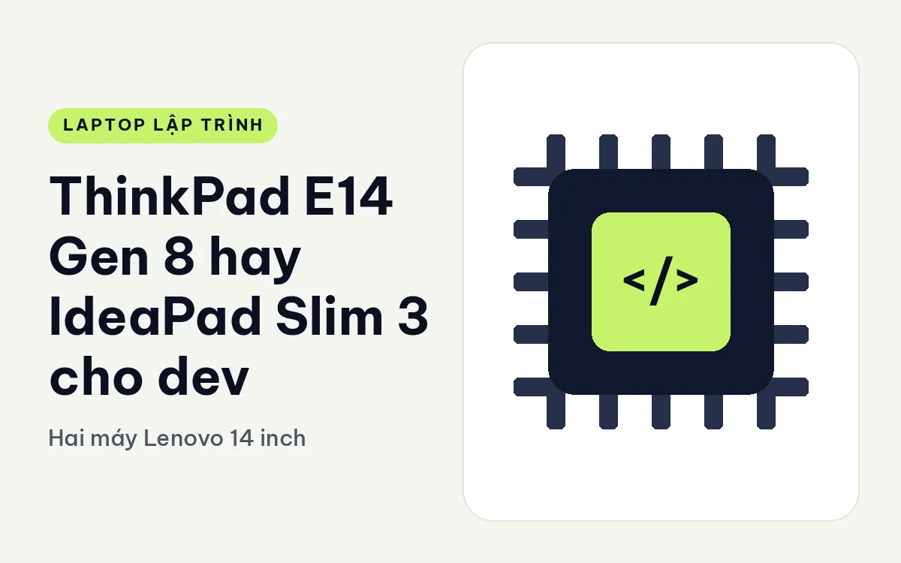
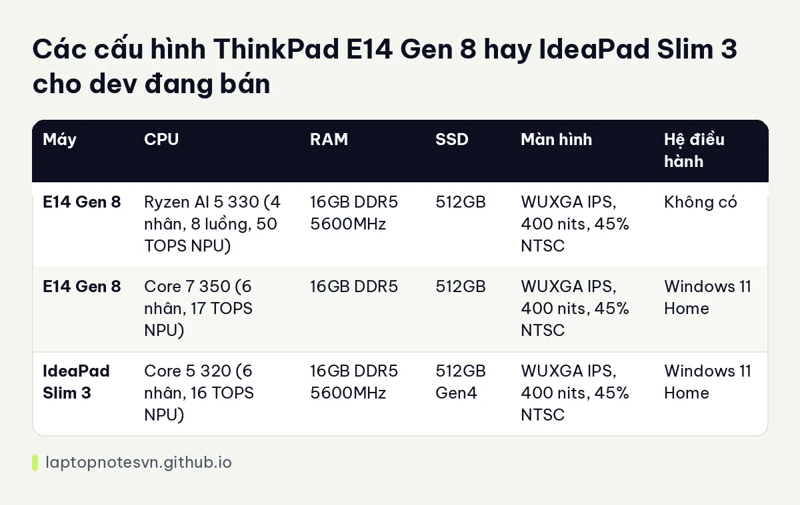

ThinkPad E14 Gen 8 hay IdeaPad Slim 3 cho dev - Hai máy Lenovo 14 inch

Một cặp rất hay bị nhầm lẫn: cùng hãng Lenovo, cùng 14 inch, cùng 16GB RAM và 512GB SSD, nhưng một máy thuộc họ ThinkPad và máy kia thuộc họ IdeaPad. Với người mới, nhìn qua thông số gần như giống nhau. Nhưng nếu bạn là dev cần máy dùng mỗi ngày nhiều năm, các chi tiết nhỏ ở bàn phím, vỏ máy và khả năng nâng cấp sẽ tạo ra khác biệt thực sự.
Máy thuộc họ ThinkPad là ThinkPad E14 Gen 8.
Máy thuộc họ IdeaPad là Lenovo IdeaPad Slim 3 14 inch.
Thiết kế ThinkPad E14 Gen 8 đặt cạnh IdeaPad Slim 3
E14 Gen 8 nặng 1,34 kg, vỏ nhôm, pin 48Wh. IdeaPad Slim 3 nặng 1,43 kg, pin 60Wh, màu Luna Grey. E14 nhẹ hơn 90 gam, còn IdeaPad có pin dung lượng lớn hơn 12Wh. Hai bên đổi chác khá đều: E14 nhẹ và vỏ nhôm, IdeaPad pin lớn hơn.
Cổng của IdeaPad gồm 2 USB-A, 1 USB-C, HDMI và khe thẻ SD, cùng 2 khe M.2 để gắn thêm SSD. E14 bản Intel có 2 cổng Thunderbolt 4; bản AMD có 2 khe RAM và 2 khe SSD. Nếu bạn cần Thunderbolt để nối dock hay màn ngoài, E14 bản Intel làm được còn IdeaPad thì không, theo dữ liệu hiện có.
Thông số các phiên bản còn hàng
| Máy | CPU | RAM | SSD | Màn hình | Hệ điều hành |
|---|---|---|---|---|---|
| E14 Gen 8 | Ryzen AI 5 330 (4 nhân, 8 luồng, 50 TOPS NPU) | 16GB DDR5 5600MHz | 512GB | WUXGA IPS, 400 nits, 45% NTSC | Không có |
| E14 Gen 8 | Core 7 350 (6 nhân, 17 TOPS NPU) | 16GB DDR5 | 512GB | WUXGA IPS, 400 nits, 45% NTSC | Windows 11 Home |
| IdeaPad Slim 3 | Core 5 320 (6 nhân, 16 TOPS NPU) | 16GB DDR5 5600MHz | 512GB Gen4 | WUXGA IPS, 400 nits, 45% NTSC | Windows 11 Home |
Màn hình giống nhau hoàn toàn trong dữ liệu: WUXGA IPS 400 nits, 45% NTSC. RAM 16GB DDR5 và SSD 512GB cũng như nhau. Điểm phân biệt là CPU: IdeaPad Slim 3 dùng Core 5 320 sáu nhân, gần với Core 7 350 của E14 ở số nhân và NPU.

E14 bản Ryzen AI 5 330 chỉ có 4 nhân 8 luồng, ít hơn các bản kia, nhưng NPU 50 TOPS rất cao. Với dev, nhân CPU quan trọng hơn cho biên dịch, nên bản Ryzen không phải lựa chọn cho việc build nặng, dù nó là bản có hai khe RAM nâng cấp được. Bạn có thể tham khảo cách tính RAM ở bài lập trình viên cần bao nhiêu RAM.
Đặt hai máy vào việc code thật
- Học lập trình, đồ án, web cơ bản: cả hai đều đủ.
- Dev cần Thunderbolt: E14 bản Core 7 350.
- Dev cần thêm ổ cứng: IdeaPad với 2 khe M.2, hoặc E14 AMD với 2 khe SSD.
- Dev muốn nâng RAM sau này: E14 AMD với 2 khe RAM.
- Dev dùng bàn phím nhiều giờ: ThinkPad nổi tiếng về bàn phím, nhưng hãy gõ thử.
Bàn phím và cảm giác dùng
Bàn phím là lý do chính khiến nhiều dev chọn ThinkPad dù thông số tương đương máy khác. E14 thừa hưởng truyền thống đó, còn IdeaPad Slim 3 là bàn phím phổ thông. Dữ liệu không đo độ nảy phím hay lực nhấn, nên đây là chuyện nên thử tại cửa hàng. Nếu mỗi ngày bạn gõ bốn đến sáu tiếng, khác biệt nhỏ ở phím cộng dồn thành cảm giác mỏi hay thoải mái.
Hệ điều hành cũng đáng nhớ: bản E14 Ryzen không kèm hệ điều hành, hai bản còn lại kèm Windows 11 Home. Dev dùng Linux có thể chọn bản không hệ điều hành để tránh trả cho thứ không dùng.
Hai điều dễ sai khi mua
Điều thứ nhất là nhầm số nhân với sức mạnh. Ryzen AI 5 330 có 4 nhân nhưng NPU rất cao, còn Core 7 350 có 6 nhân. Với dev biên dịch nhiều, 6 nhân có lợi hơn, và bản Core 5 320 của IdeaPad cũng 6 nhân. Đừng chọn theo con số TOPS nếu bạn không dùng tính năng AI trên máy.
Điều thứ hai là quên tính chi phí hệ điều hành. Bản không kèm Windows rẻ hơn nhưng bạn phải tự cài, và nếu muốn Windows chính hãng thì phải trả thêm. Dev dùng Linux thì tiết kiệm được khoản này.
Cũng nên hỏi cửa hàng về bảo hành và cách đổi trả, đặc biệt với máy không kèm hệ điều hành, vì cách bảo hành có thể khác nhau giữa các bản.
Một chi tiết nhỏ khác là màu máy và cảm giác cầm. IdeaPad có màu Luna Grey nhẹ nhàng, E14 mang dáng ThinkPad quen thuộc với vỏ nhôm. Đây là chuyện sở thích, nhưng với người dùng máy tám tiếng mỗi ngày, cảm giác khi cầm cũng góp phần vào việc bạn có thích máy hay không.
Quyết định cuối cho người code
Chọn E14 Gen 8 nếu bạn cần vỏ nhôm, bàn phím ThinkPad, Thunderbolt hoặc đường nâng cấp RAM. Bài E14 Gen 8 cho lập trình có thêm chi tiết.
Chọn IdeaPad Slim 3 nếu bạn cần pin lớn hơn, khe thẻ SD và hai khe M.2 trong một máy giản dị. Xem IdeaPad Slim 3 cho lập trình để biết thêm.
Nếu mua cho ba năm trở lên, E14 là lựa chọn chắc tay hơn; nếu mua để thử nghề trong một hai năm, IdeaPad đủ dùng.
Đăng ngày 09/11/2026